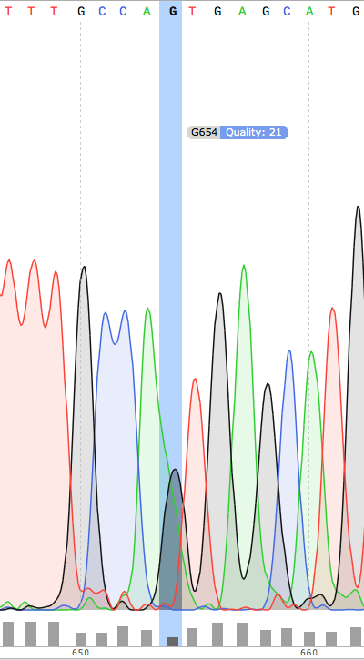

Table of Contents
- 1. Structure
- 2. Commentaires
- 3. Scripts
- 3.1. Première version
- 3.1.1. Extraction des données brutes
- 3.1.2. Des spectrogrammes aux données fastq non-trimmées
- 3.1.3. Des données non-trimmées aux données trimmées et filtrées
- 3.1.4. Analyse de la qualité des séquences
- 3.1.5. Détermination des SNP
- 3.1.6. Analyse des variants
- 3.1.6.1. Lecture des données et nettoyage
- 3.1.6.2. Détermine la qualité des SNP
- 3.1.6.3. Graphiques globaux
- 3.1.6.4. Observations globales
- 3.1.6.5. Détermination des SNP calibrés
[2/2] - 3.1.6.6. Positions terminales de switch
[1/3] - 3.1.6.7. SNP inattendus
[1/1] - 3.1.6.8. Position des SNP par rapport à la conversion tract
[1/1] - 3.1.6.9. Polymorphisme
[1/2]
- 3.2. Deuxième version
- 3.1. Première version
- 4. Script Principal
- 5. configuration CONFIG
(org-babel-tangle-file "README.org")
Le dossier contient les données du séquençage des deux plaques envoyées à la suite des manips de Florence.
1 Structure
tree ./ -L 2
| dossier | fichier ou dossier | description |
|---|---|---|
| analysis | ||
| – plots | dossier contenant les différents plots générés par plots-bcftools. | |
| – snpdistribution.pdf | la distribution des SNP sans tenir compte de la provenance des mutants | |
| – snpresume.pdf | les trois plots sur la même feuille | |
| – substitutiondistribution.pdf | la distribution des substitutions. | |
| – trimmedfastqc.html | le contrôle de la qualité des séquences trimmées via fastqc | |
| – untrimmedfastqc.html | le contrôle de la qualité des séquences non-trimmées via fastqc | |
| – vincentplot.pdf | le graphe de vincent le jour de la réception des données. | |
| – AnalysisSummary-SangerPipeline.pdf | description du fichier d'analyse GATK | |
| data | ||
| – 1369607.INDEL.csv | le fichier envoyé par GATK | |
| – 1369607.SNP.csv | le fichier envoyé par GATK | |
| – 1369628.INDEL.csv | le fichier envoyé par GATK | |
| – 1369628.SNP.csv | le fichier envoyé par GATK | |
| – all.fasta | toutes les séquences | |
| – fasta | dossier contenant les séquences une à une | |
| – fastq | idem en fastq | |
| – idtable.dat | une table contenant les nom de séquence, le mutant, et la qualité du mutant | |
| – rawseqnvbr | le dossier contenant les données brutes. NEPASTOUCHER | |
| – reference.fasta | la séquence de référence | |
| – refseq.fasta | idem | |
| – refseqreverse.fasta | la séquence de référence reversed. | |
| – seq | le dossier contentant les séquneces | |
| – spectrograms | le dossier contentant les .ab1 files | |
| – tmp | un dossier de travail | |
| – trimmed.fasta | les séquences trimmées | |
| – trimmed.fastq | idem | |
| – untrimmed.fastq | les séquences non trimmées | |
| – variantCalling | le dossier de travail pour l'analyse des variants | |
| scripts | ||
| – ab1parser.py | convertit l'ensemble des fichiers .ab1 en fastq | |
| – ab1tofastq | idem, utilitaire pipeable | |
| – exploratoryanalysis.R | premières analyses dans R | |
| – extractrawdata.sh | met en place la structure de données | |
| – makeidtable.py | crée le fichier ../data/idtable.dat | |
| – qualitycheck | analyse la qualité via fastqc | |
| – trimlowquality.sh | trimme les séquences via bbduk | |
| – variantCallerBwa.sh | un premier essai d'alignement et de snp calling via samtools et bcftools | |
| – variantCallerSsaha2.sh | l'alignement avec ssaha2SNP | |
| – variantanalysis.R | l'analyse des variants et les graphes qui vont avec |
2 Commentaires
2.1
Pas de données dans le fichier ./data/fasta/pS6-1073.fas, mais pourtant le fichier ./data/spectrograms/pS6-1073.ab1 en contient. On repart des .ab1 avec un script ./scripts/ab1_parser.py, qui convertit les .ab1 en fasta et fastq.
Le fichier ./data/fasta/pS6-1073.fst est toujours aussi mauvais. Erreurs de séquençage ? À exclure des analyses.
Le fichier ./data/fasta/pS9-1073.fst a un indel en position 343-342 et en position 397. Au vu du spectrogramme ./data/spectrograms/pS9-1073.ab1, c'est une erreur de séquençage. Globalement, qualité du séquençage pas très bonne. À exclure des analyses.
2.2
La semaine dernière, le script ./scripts/ab1_parser.py convertissait tous les
spectrograms de ab1 vers fastq. Combiné en 1 fichier, all.fastq, on a
utilisé fastqc pour avoir une idée de la qualité. Le résultat dans
./analysis/all_fastqc.html. Il a été convenu arbitrairement avec Vincent que les bases d'une
qualité < 28 seraient exclues de l'analyse. Aujourd'hui, le script
./scripts/ab1_parser.py va être modifié en conséquence. Voir les anciennes
versions via git éventuellement.
J'écris également aujourd'hui le script ./scripts/trim_low_quality.py, qui enlève les 30 premières et dernières séquences, et qui empêche les séquences de trop mauvaise qualité d'être utilisées dans l'analyse.
Finalement, inutile de réinventer la roue. Fastx_toolkit devrait normalement
faire ça très bien, mais ça ne fonctionne pas, pour des raisons que je ne
m'explique pas. Cependant, je suis tombé sur l'utilitaire BBmap, qui contient
entre autre, bbduk. Voir le fichier source ici, la page de téléchargement là,
et pour des commentaires sur l'utilisation Voir là, et là.
2.3
Je supprime donc le script low_quality_trim.py. J'utilise le script
low_quality_trim.sh.
En résultat, comparer ./analysis/trimmed_fastqc.html et ./analysis/untrimmed_fastqc.html. On n'a plus que 179 séquences au lieu de 192, mais ça vaut le coup, la qualité est largement supérieure.
Je veux maintenant déterminer les SNPs. Il faut donc que j'aligne les séquences
obtenues avec la séquence de référence ./data/refseq.fasta. GATC utilise le
software SSAHA2 (voir là) mais à priori il n'est plus utilisable. Le site
recommande d'utiliser SMALT, (voir la page de téléchargement là, le manuel là
et la page du software là.
En fait, je l'ai juste installé comme ça :
brew update brew tap homebrew/homebrew-science brew install smalt
Finalement, c'est encore un autre workflow que je veux adopter. On repart sur
ssaha2 et ssaha2SNP, la page de téléchargement étant
ftp://ftp.sanger.ac.uk/pub/resources/software/ssaha2/.
2.4
Il faut clarifier les étapes permettant d'aligner et de déterminer les SNP. Ce qui est fait dans le script ./scripts/variantCallerSsaha2.sh.
2.5
Le rapport était basé sur une version de ma fonction mutant_caller dans le
script R ./scripts/variant_analysis.R qui était fausse. Très fausse. Beaucoup de
boulot à corriger.
2.6
La photo suivante montre le spectrogramme d'une position appelée N dans les alignements. Pour moi c'est la marque de l'hétérogénéité dans la colonie. Les uns réparent en G, les autres en A ou T.

2.7
J'ai cherché à extraire les données trace par trace, mais à priori il n'y a pas
d'OSS qui permette de faire ça. On va donc utiliser la qualité comme proxy du
polymorphisme. Ça implique de baisser le seuil d'exigence quant aux bases qu'on
décide de renommer N. Donc modification du script
3 Scripts
3.1 Première version
Contient les différents scripts nécessaires pour aboutir aux contenus
d'analysis.
3.1.1 Extraction des données brutes
Pour extraire les données du fichier brut .zip à la structure de données.
#!/bin/bash cd ~/stage/seq_novembre/ # Le script qui extrait les données depuis les fichiers zip bruts et qui met en # place la structure de fichier. cd ./data ## extraction des données brutes unzip raw_seq_nvbr/1369607.zip unzip raw_seq_nvbr/1369628.zip ## crée les dossiers mkdir fasta seq spectrograms csv ## déplace tout les fichiers dans des dossiers adaptés find . -name "*.fas" -exec mv -i {} -t ./fasta/ \; find . -name "*.ab1" -exec mv -i {} -t ./spectrograms/ \; find . -name "*.seq" -exec mv -i {} -t ./seq/ \; find . -name "*.csv" -exec mv -i {} -t ./csv/ \; # déplace le contenu du dossier inutile dans le présent dossier mv 1369628/* ./ rm -r 1369628 # supprime le dossier # déplace le fichier pdf dans le dossier adapté mv *.pdf ../analysis
Les spectrogrammes contiennent l'info de la sequenceid et du nom. On construit une table avec la qualité du mutant en troisième colonne.
from Bio import SeqIO import glob def strong_or_weak(record): """ Determine si le mutant est strong ou weak """ if 'S' in record: return 'strong' else: return 'weak' # en-tete de colonne print "id name mutant" # pour chaque fichier ab1 for file in glob.glob("../data/spectrograms/*.ab1"): with open(file, "rb") as spectro: for record in SeqIO.parse(spectro, "abi"): # associer l'id avec le nom et le type de mutant print record.id + " " + record.name + \ " " + strong_or_weak(record.name)
On crée la table en question via :
cd ~/stage/seq_novembre/scripts
python make_id_table.py > ../data/id_table.dat
3.1.2 Des spectrogrammes aux données fastq non-trimmées
3.1.2.1 prérequis
brew install emboss
3.1.2.2 via seqret
cd ~/stage/seq_novembre/scripts touch untrimmed.fastq for file in ../data/spectrograms/*.ab1 do seqret \ -sformat abi \ -osformat fastq \ -auto \ -stdout \ -sequence $file \ >> ../data/untrimmed.fastq done ## convertit le fastq en fasta seqret -sformat fastq -osformat fasta -auto -stdout \ -sequence ../data/untrimmed.fastq > ../data/untrimmed.fasta
3.1.3 Des données non-trimmées aux données trimmées et filtrées
Un script qui convertit le fichier ./data/untrimmed.fastq en fichier ./data/trimmed.fastq. bbduk trimme les bases de faible qualité. seqtk convertit les bases restantes de faible qualité en N, seqret convertit le fastq généré en fasta.
#!/usr/local/bin/bash #' -qtrim=rl : quality trim right and left #' -trimq=28 : trim if quality < 28 (sanger encoding, illumina 1.9) #' -minlen=620 : keep only seq with length > 620, after trimming. #' -Xmx1g : tells bbduk / java to use 1G of RAM if [[ -f ../data/untrimmed.fastq && ! -f ../data/trim.fastq ]] then # si les fichiers n'existent pas. ~/.bin/bbmap/bbduk.sh -Xmx1g \ -in=../data/untrimmed.fastq \ -out=../data/trim.fastq \ -qtrim=rl \ -trimq=28 \ -minlen=620 ## convertit les bases d'une qualité inférieure à 20 en N. seqtk seq -q20 -nN ../data/trim.fastq > ../data/trimmed.fastq ## convertit le fastq en fasta seqret -sformat fastq -osformat fasta -auto -stdout \ -sequence ../data/trimmed.fastq > ../data/trimmed.fasta rm ../data/trim.fastq else printf "Le fichier untrimmed.fastq n'existe pas, ou le fichier trimmed.fastq existe déjà." fi
3.1.4 Analyse de la qualité des séquences
Le script utilisé pour analyser les données de qualité via fastqc.
#!/usr/local/bin/bash cd ~/stage/seq_novembre/scripts # quand dans le dossier ./scripts cd ../data/ if [ -f untrimmed.fastq ] && [ -f trimmed.fastq ] ; then mkdir tmp # analyse les données et output dans tmp fastqc untrimmed.fastq -o ./tmp fastqc trimmed.fastq -o ./tmp # unzip resulting files unzip -qq tmp/untrimmed_fastqc.zip -d tmp unzip -qq tmp/trimmed_fastqc.zip -d tmp # extract main results mv tmp/untrimmed_fastqc/Images/per_base_quality.png \ ../analysis/per_base_quality_fastqc_untrimmed.png mv tmp/trimmed_fastqc/Images/per_base_quality.png \ ../analysis/per_base_quality_fastqc_trimmed.png # copy html into analysis mv tmp/*.html ../analysis/ # delete tmp files rm -r tmp # remove temporary files else printf "Les fichiers untrimmed.fastq et trimmed.fastq n'existent pas." fi
3.1.5 Détermination des SNP
#!/bin/bash # variant calling using ssaha2 and ssaha2SNP cd ~/stage/seq_novembre/data ## prend le reverse complement de la séquence de référence fastx_reverse_complement -i reference.fasta -o reference_reverse.fasta mkdir variantCalling cd variantCalling ## place les séquences nécessaires pour l'analyse dans le dossier. ln -s ../trimmed.fastq . ln -s ../reference_reverse.fasta ./reference_reverse.fasta ## alignement à la séquence de référence #' -output psl : format de sortie psl #' reference_reverse.fasta : séquence de référence #' trimmed.fastq : séquence à aligner #' output.psl : fichier de sortie ~/.bin/ssahaSNP/ssaha2 -output psl reference_reverse.fasta trimmed.fastq > output.psl ## polymorphism detection tool ~/.bin/ssahaSNP/ssahaSNP reference_reverse.fasta trimmed.fastq > SNP.txt ## computer readable format conversion # egrep trouve les lignes où sont indiquées les données concernant les SNP # awk extrait les champs en question dans un fichier SNP.dat egrep ssaha:SNP SNP.txt | \ awk '{print $1,$2,$3,$4,$5,$6,$7,$8,$9,$10,$11,$12,$13,$14,$15}' > SNP.dat ## column annotation based on ## ftp://ftp.sanger.ac.uk/pub/resources/software/ssahasnp/readme, ## part (6) some further information # la première ligne du fichier .dat, afin d'être lu dans R echo " match subject_name index_of_subject read_name s_base q_base s_qual q_qual offset_on_subject offset_on_read length_of_snp start_match_of_read end_match_of_read match_direction length_of_subject " > head.dat # into final document cat head.dat SNP.dat > snp_calling.dat
3.1.6 Analyse des variants
3.1.6.1 Lecture des données et nettoyage
Le fichier file:///Users/samuelbarreto/stage/seq_novembre/data/variantCalling/snp_calling.dat contient les données d'intérêt. Il ne contient ni le nom du transformant, ni son type (Weak ou Strong). Les données sont récupérées dans le fichier ./data/id_table.dat. Les deux tables sont associés via un innerjoin.
On s'est rendu compte que le plasmide pS60 était un contaminant, toutes les
mutations qu'il engendre sont de type weak. Il est donc rebasculé dans le
tableau des Weak.
setwd("~/stage/seq_novembre/data/variantCalling") library(dplyr) ## read the data snp <- tbl_df(read.table("snp_calling.dat", head = TRUE)) ## enlève les colonnes inutiles snp %>% select( -match, -subject_name, -index_of_subject, -length_of_subject, -match_direction, -contains("_of_read"), -contains("on_read"), -contains("_of_snp"), -s_qual ) -> snp ## lit les métadonnées de séquence id_table <- tbl_df(read.table("../id_table.dat", head = TRUE)) ## fait correspondre le read_name avec le nom du clone et le type de mutant W ou S snp <- inner_join(x = snp, y = id_table, by = c("read_name" = "id")) ## suppress tmp var rm(id_table) ## bascule les contaminants mysterieux dans la bonne catégorie ## TESTE ET APPROUVE snp$mutant[snp$name == "pS60-1073"] <- "weak" snp$mutant[snp$name == "pS83-1073"] <- "weak" snp$mutant[snp$name == "pS92-1073"] <- "weak" snp$mutant[snp$name == "pS91-1073"] <- "weak" snp$mutant[snp$name == "pW6-1073" ] <- "strong"
3.1.6.2 Détermine la qualité des SNP
Pour déterminer si le SNP est de type weak ou strong, j'utilise la fonction
mutant_caller. Si la référence est A ou T, soit le transformant est C ou G, et
la substitution est WS ; soit le transformant est A ou T, et la mutation est
WW. Si la référence est C ou G, soit le transformant est A ou T, et la
substitution est SW ; soit le transformant est G ou C, la substitution est
SS.
#' une fonction pour déterminer si la substitution est strong ou weak. On peut #' avoir des substitutions weak chez les strongs #' @param subject la base sur la séquence de référence #' @param query la base sur le read. mutant_caller <- function(subject, query) { if (subject == 'A' || subject == 'T') { if (query == 'C' || query == 'G' ) { 'WS' } else { 'WW' } } else if (subject == 'C' || subject == 'G') { if (query == 'A' || query == 'T') { 'SW' } else { 'SS' } } } ## on applique la fonction rowwise, ie ligne par ligne, via `mutate`, puis on ## dégroupe. snp %>% rowwise() %>% mutate(mutation_type = mutant_caller(s_base, q_base)) %>% ungroup() -> snp ## conversion en facteur snp$mutation_type = factor(snp$mutation_type)
3.1.6.3 Graphiques globaux
Des graphiques de distribution globale des SNP sont fait ici.
##============================================================================== ## SHORTCUT PLOT FUNCTION ##============================================================================== library(ggplot2) ##' .. content for \description{} (no empty lines) .. ##' ##' Une fonction qui permet de court-circuiter ggplot : représente en ordonnée ##' la distribution des positions de snp, en abscisse la position des SNPs, par ##' défault la couleur repéresente le type de mutant, peut être également ##' attribuée à mutation_type. Respecte les critères visuels de tufte. Nécessite ##' ggplot2 1.02 si je ne m'abuse, avec l'option panel.ontop en tout cas. ##' ##' .. content for \details{} .. ##' @title plot_snp ##' @param snp les données de snp ##' @param fill la couleur par laquelle on color les barres ##' @param legend_position la position de la légende sur le graphe ##' @param legend_name le titre de la légende. rien par défault ##' @return un graphique ##' @author Samuel Barreto plot_snp <- function(data, fill_by = "mutant", legend_position = c(0.2, 0.8), legend_name = "") { plot <- ggplot(data = data, aes(offset_on_subject)) + theme_minimal(base_family = "Courier") + scale_x_continuous(breaks = seq(1, 734, 30)) + scale_fill_brewer(palette = "Set2", name = legend_name) + xlab("") + ylab("") + theme(panel.ontop = TRUE, legend.position = legend_position, axis.text = element_text(size = 8, colour = "gray"), panel.grid.major.x = element_blank(), panel.grid.minor.x = element_blank(), panel.grid.minor.y = element_blank(), panel.grid.major.y = element_line(colour = "white", size = 1)) if (fill_by == "mutation_type") { plot + geom_histogram(aes(fill = mutation_type), binwidth = 10, position = "dodge") } else { plot + geom_histogram(aes(fill = mutant), binwidth = 10, position = "dodge") } } ##============================================================================== ## PLOT DISTRIBUTIONS ##============================================================================== pdf(file = "../../analysis/snp_distribution.pdf", height = 5.8, width = 8.3) ## distribution des SNP ## facétée par type de mutant, couleur = type de mutation snp %>% plot_snp(legend_name = "Exogene", legend_pos= c(.2, .8)) dev.off() #------------------------------------------------------------------------------- pdf(file = "../../analysis/mutant_snp_distribution.pdf", height = 5.8, width = 8.3) snp %>% plot_snp(fill_by = "mutation_type", legend_name = "Type de Mutation" ) + facet_grid(mutant ~ .) dev.off()
3.1.6.4 Observations globales
Différents tableaux de résumé généraux.
## ============================================================================= ## OBSERVATIONS GÉNÉRALES ## ============================================================================= sink(file = "../../analysis/observations.tex") snp %>% group_by(mutant, name) %>% summarise(count = n()) %>% summarise(mean = mean(count), med = median(count), sd = sd(count) ) %>% knitr::kable( align = 'c', digits = 2, booktabs = TRUE, format = "latex") sink() sink(file = "../../analysis/count_by_mutant.tex") snp %>% group_by(mutant) %>% summarise(count = n()) %>% knitr::kable( align = 'c', booktabs = TRUE, format = "latex") sink() sink(file = "../../analysis/count_by_muttype.tex") snp %>% group_by(mutation_type) %>% summarise(count = n()) %>% knitr::kable(col.names = c("Type de mutation", "nombre"), align = 'c', booktabs = TRUE, format = "latex") sink() sink(file = "../../analysis/seq_by_mutant.tex") distinct(snp, name, mutant) %>% group_by(mutant) %>% summarise(count = n()) %>% knitr::kable( align = 'c', booktabs = TRUE, format = "latex") sink()
3.1.6.5 Détermination des SNP calibrés [2/2]
[X]créer la fonctionis_a_positionqui détermine si un SNP est bien à la position attendu[X]faire la même chose par type de mutant
On veut filtrer les positions qui sont bien les SNP calibrés.
## ============================================================================== ## SNP ATTENDUS OU NON ## ============================================================================== ## ## compte le nombre de SNP par position. hypothèse : un SNP `calibré' génère au ## moins 5 SNP parmi toutes les séquences. sortie dans une table qui sert de ## query à la fonction =is_position= snp %>% group_by(offset_on_subject) %>% summarise(count = n()) %>% ## qplot(data = ., offset_on_subject, count) filter(count > 5) %>% select(offset_on_subject) %>% unlist() %>% as.vector() -> position_table ##' .. content for \description{} (no empty lines) .. ##' détermine si la postion sur la séquence de référence est un SNP artificiel ##' ou un autre genre de SNP. ##' .. content for \details{} .. ##' @title is_position ##' @param position ##' @param table ##' @return "oui" ou "non" ##' @author Samuel Barreto is_position <- function(position, table) { ifelse(position %in% table, 'oui', 'non') } snp %>% rowwise() %>% mutate(position = is_position(offset_on_subject, position_table)) %>% ungroup() -> snp ## gros résultat là. ## on voit seulement 3 mutations S->W contre 12 W->S ! pdf(file = "../../analysis/bgc_en_action.pdf", height = 5.8, width = 8.3) snp %>% filter(position == "non") %>% plot_snp(fill_by = "mutation_type") + scale_y_continuous(breaks = c(1, 2)) + scale_x_continuous(breaks = position_table, name = waiver()) + ggtitle("Substitution aux positions inattendues : biaisees vers GC ?") + theme(panel.grid.major.x = element_line(colour = "gray")) dev.off() sink(file = "../../analysis/bgc_en_action.tex") snp %>% filter(position == "non") %>% group_by(mutation_type) %>% summarise(count = n()) -> bgc_en_action colnames(bgc_en_action) <- c("Type de Substitution", "Nombre") print(xtable::xtable( bgc_en_action, align = 'ccc'), include.rownames = FALSE) sink()
3.1.6.6 Positions terminales de switch [1/3]
[ ]voir avec vincent le test à utiliser pour comparer les distributions[ ]comparer les distributions statistiquement, si \(n\) est suffisamment grand.[X]Naïvement on utilise ici la position terminale du dernier SNP. Cependant, il existe des SNPs qui ne sont pas dans la conversion track, c'est ce qu'on a observé. Il faut donc définir une nouvelle fonctionmax_posqui définit si on est bien à un SNP calibré ou non. voir après avoir définit la fonctionis_a_position. => Simplement filtrer par position
On veut ici analyser la distribution des positions terminales de SNP. C'est à dire à quel endroit on bascule à nouveau sur le génotype sauvage. On ne garde que les positions qui sont des positions calibrées.
##============================================================================== ## POSITION DE SWITCH ##============================================================================== pdf(file = "../../analysis/switch_distrib.pdf", height = 5.8, width = 8.3) snp %>% ## par plasmide -- et par type de mutant group_by(name, mutant) %>% ## garde seulement les positions calibrées filter(position == "oui") %>% ## cherche la postion minimale de SNP summarise(offset_on_subject = min(offset_on_subject)) %>% ## represente la distribution plot_snp(legend_position = c(0.8, 0.8)) + ggtitle("Distribution de la position de switch en fonction du type de mutant") + ## superpose les deux distribution pour comparer facet_grid( mutant ~ .) dev.off()
3.1.6.7 SNP inattendus [1/1]
[X]rajouter le filtre sur les positions calibrées.
Le but est de trouver les SNPs aux positions calibrées qui ne sont pas ceux attendus. Typiquement ce sont les mutations strong dans la manip Weak, et les mutations weak dans la manip Strong. Si les mutations en questions sont répétées sur l'ensemble du clone, alors c'est une contamination. Sinon, ce sont des données intéressantes.
##============================================================================== ## OUTLIERS ##============================================================================== ## ##' .. content for \description{} (no empty lines) .. ##' ##' Détermine si le SNP en question est un outlier ou non, c'est à dire une ##' mutation strong chez un mutant weak ou inversement. ##' ##' .. content for \details{} .. ##' @title is_outlier ##' @param mutant : le type de mutant ##' @param mutation_type : le type de substitution ##' @return ##' @author Samuel Barreto is_outlier <- function(mutant, mutation_type) { if (mutant == 'strong' && mutation_type == 'SW') { "non" } else if (mutant == 'weak' && mutation_type == 'WS') { "non" } else { 'oui' } } snp %>% ## par ligne, determine si la position est inattendue rowwise() %>% mutate(attendu = is_outlier(mutant, mutation_type)) %>% ungroup() %>% ## garde les positions calibree filter(position == "oui") %>% ## sur lesquelles le résultat est inattendu filter(attendu == "non") %>% plot_snp(legend_position = c(0.2, 0.9)) + geom_text(aes(label = name, y = 0.5), check_overlap = TRUE, position = "dodge") + coord_flip() + theme(panel.ontop = FALSE) ## sortie des résultats dans un joli tableau latex sink( file = "../../analysis/outlier.tex", append = FALSE) snp %>% rowwise() %>% mutate(attendu = is_outlier(mutant, mutation_type)) %>% ungroup() %>% filter(attendu == "non") %>% mutate(position = offset_on_subject, ref = s_base, read = q_base) %>% select(-read_name, -offset_on_subject, -s_base, -q_base) %>% knitr::kable(format = "latex", booktabs = TRUE) sink() ## pdf(file = "../../analysis/outliers.pdf", width = 4, height = 2)
3.1.6.8 Position des SNP par rapport à la conversion tract [1/1]
[X]Écrire une fonctionis_inside_convqui détermine si un SNP est en dehors ou en dedans de la conversion tract.
snp %>%
## par exogene
group_by(name) %>%
## garde seulement les positions attendues
filter(position == "oui") %>%
## cherche la borne supérieure et inférieure
summarise(min = min(offset_on_subject), max = max(offset_on_subject)) %>%
## combine avec la table mère
inner_join(snp, by = "name") ->
snp
##' .. content for \description{} (no empty lines) ..
##' détermine si le SNP est dans la conversion tract ou non.
##' .. content for \details{} ..
##' @title
##' @param query la position requête
##' @param min la borne inférieure de la conversion tract
##' @param max la borne supérieure de la conversion tract
##' @return oui ou non
##' @author Samuel Barreto
is_inside_conv <- function(query, min, max)
{
ifelse(min <= query & query <= max, "oui", "non")
}
sink(file = "../../analysis/inside_conv.tex")
snp %>%
rowwise() %>%
## détermine si on est dans la conversion tract ou non
mutate(inside_conv = is_inside_conv(offset_on_subject, min, max)) %>%
ungroup() %>%
## filtre pour avoir les snp non attendus
filter(position == "non") %>%
## groupe selon qu'on est dans ou en dehors de la CT
group_by(inside_conv) %>%
## compte le nombre de snp par cas
summarise(count = n()) %>%
## format en .tex
knitr::kable(format = "latex", booktabs = TRUE)
sink()
3.1.6.9 Polymorphisme [1/2]
- Graphiquement
On veux étudier le polymorphisme aux positions calibrées. Comme on ne peut pas avoir accès aux données trace par trace, on utilise la qualité comme proxy du polymorphisme. Résultat intéressant ici.
pdf(file = "../../analysis/qualite_distrib.pdf", height = 5.8, width = 8.3) snp %>% filter(position == "oui") %>% qplot(data = ., x = offset_on_subject, y = q_qual, color = mutant, alpha = 0.1) + theme_minimal(base_family = "Courier") + scale_color_brewer(palette = "Set2", name = "") + scale_alpha_continuous(guide = FALSE, name = "") + xlab("Position") + ylab("qualite") + scale_x_continuous(breaks = position_table) + theme(legend.position = c(0.5, 0.2), axis.text = element_text(size = 8, colour = "gray")) dev.off()
- Fréquence des bases polymorphes associées aux SNP attendus
sink("../../analysis/freq_polymorphism.tex") snp %>% filter(position == "oui", q_qual < 40, offset_on_subject < 600) %>% group_by(mutant) %>% summarise(count = n()) %>% knitr::kable(format = "latex", booktabs = TRUE) sink() snp %>% filter(position == "non", q_qual < 40, offset_on_subject < 600) #%>% group_by(mutant) %>% summarise(count = n())# %>% knitr::kable(format = "latex", booktabs = TRUE)
3.2 Deuxième version
3.2.1 Base calling
setwd("~/stage/seq_novembre/data/tmp/") library(dplyr) library(sangerseqR) library(Biostrings) # la deuxième ligne du fichier reference.fasta contient la séquence de # référence. Elle est convertie en un objet DNA string. ref <- readLines("../reference.fasta")[2] %>% DNAString() ##' .. content for \description{} (no empty lines) .. ##' Call bases on a query, based on primary and secondary traces. ##' .. content for \details{} .. ##' @title baseCaller ##' @param query the ab1 file name. ##' @param ref the reference. a DNAString object. ##' @return a sangerseqR object. ##' @author Samuel BARRETO baseCaller <- function(query, ref) { readsangerseq(query) %>% makeBaseCalls(ratio = 0.5)# %>% ## setAllelePhase(obj = ., refseq = ref) } #' TEST: pW85 <- baseCaller(query = "../spectrograms/pW85-1073.ab1", ref = ref)
3.2.2 Alignement
##' .. content for \description{} (no empty lines) .. ##' Aligne les données de la séquence primaire avec ceux de la séquence ##' secondaire, en utilisant un algorithme TODO de type SM. ##' .. content for \details{} .. ##' @title aligner ##' @param seq l'objet sangerseq d'intérêt. ##' @param name le nom de la séquence, NSE. ##' @return un tableau contenant la position, la base du pic majeur, ##' la base du pic secondaire et le nom de la séquence. ##' @author Samuel BARRETO aligner <- function(seq, name) { argname <- deparse(substitute(seq)) pairwiseAlignment(primarySeq(seq), secondarySeq(seq), type= "global-local") %>% mismatchTable() %>% ## ne garde que les bases litigieuses et leur position select(primaire = PatternSubstring, secondaire = SubjectSubstring, position = PatternStart) %>% ## trim les positions de faible qualité filter(position > 40, # première position de bonne qualité position < length(primarySeq(seq)) - 40) %>% # dernière position de bonne qualité. mutate(name = name) # ajoute une colonne avec le nom de la séquence. } pW85_mm <- aligner(pW85, "pW85") pW85_mm
3.2.3 Pooling
id_table <- tbl_df(read.table("../id_table.dat", stringsAsFactors = FALSE, head = TRUE)) ## rebascule les données litigieuses dans les bonnes catégories ## voir les premiers scripts. id_table$mutant[id_table$name == "pS60-1073"] <- "weak" id_table$mutant[id_table$name == "pS83-1073"] <- "weak" id_table$mutant[id_table$name == "pS92-1073"] <- "weak" id_table$mutant[id_table$name == "pS91-1073"] <- "weak" id_table$mutant[id_table$name == "pW6-1073" ] <- "strong" ## élimine les fichiers aux données manquantes id_table <- filter(id_table, name != "pS6-1073", name != "pS9-1073") ##' .. content for \description{} (no empty lines) .. ##' Appelle les bases principales et secondaires par fichier, ##' et aligne avec la séquence de référence. ##' .. content for \details{} .. ##' @title mismatcher ##' @param sequence char, le nom de la séquence. ##' @param ref DNAString, la séquence de référence. ##' @return ##' @author Samuel BARRETO mismatcher <- function(sequence, ref) { baseCaller(query = paste0("../spectrograms/", sequence, ".ab1"), ref) %>% aligner(., sequence) } ## baseCaller(query = paste0("../spectrograms/", id_table$name[1], ".ab1"), ref) ## test_id_table <- id_table %>% sample_n(30) result_table <- do.call( rbind, lapply( lapply(id_table$name, function(x) mismatcher(sequence = x, ref = ref)), data.frame ) ) write.csv(result_table, file = "result_table") result_table %>% tbl_df() %>% inner_join(id_table, by = "name") %>% filter(mutant == "strong") %>% print()
3.2.4 Sens des mutations
iupac_code <- " iupac,meaning A,A C,C G,G T,T M,AC R,AG W,AT S,CG Y,CT K,GT V,ACG H,ACT D,AGT B,CGT X,GATC N,GATC " read.csv(text = iupac_code, stringsAsFactors = FALSE) %>% tbl_df() -> iupac is_iupac <- function(base) ifelse(base %in% c("A", "T", "C", "G"), FALSE, TRUE) iupacker <- function(subject, query) { lapply( str_split(paste0(subject, query), ""), sort) } result_table %>% filter( is_iupac(SubjectSubstring)) %>% inner_join(y = iupac, by = c("SubjectSubstring" = "iupac"))
3.2.5 Analyses
peakAmpMatrix(pW85) %>% as.data.frame() %>% tbl_df() %>% mutate(pos = rownames(.)) %>% gather(trace, value, V1:V4) -> peakmatrix traceMatrix(pW85) %>% as.data.frame() #%>% tbl_df() %>% mutate(pos = rownames(.)) %>% gather(trace, value, V1:V4) -> tracematrix
4 Script Principal
cd ~/stage/seq_novembre/scripts chmod +x *.sh ./extract_raw_data.sh # extrait les données des .zip et # organise en sous fichiers ./ab1_to_fastq.sh # extrait les fastq et fasta # depuis les .ab1 ./trim_low_quality.sh # supprime les données de faible # qualité et transforme les bases # de qualité inférieure à 28 en N ./quality_check.sh # analyse fastqc, crée les # graphes en png et sortie des # html dans le dossier analysis ./variantCallerSsaha2.sh # détermine la position des SNP # basé sur la référence python make_id_table.py > ../data/id_table.dat # crée la table d'association des # identifiants de séquence avec # le nom des clones Rscript variant_analysis.R # analyses et graphiques